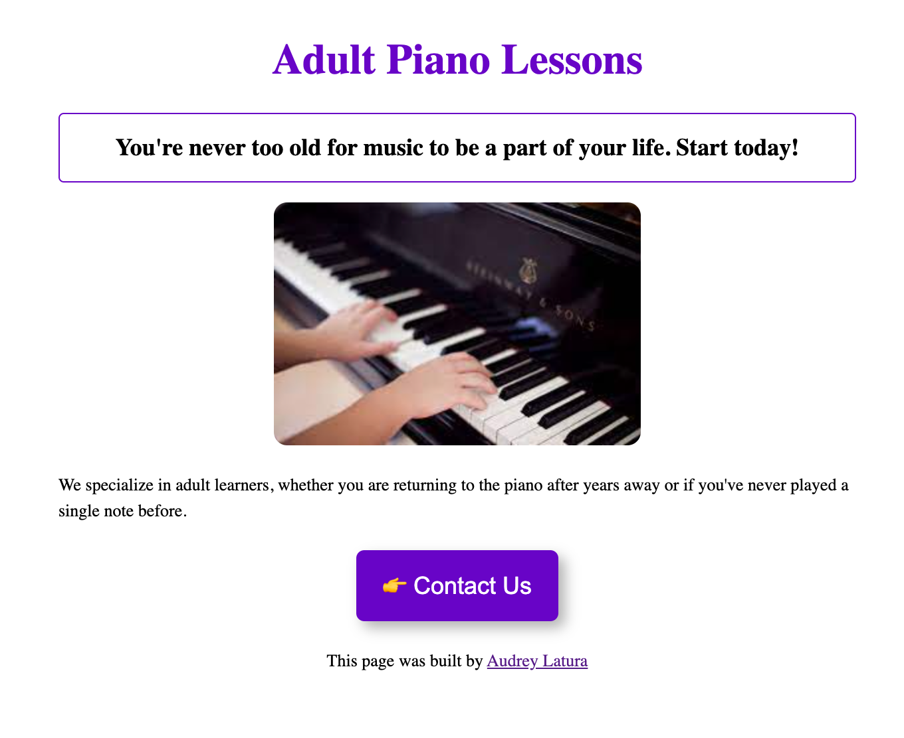

Audrey Latura is an academic researcher and freelance front-end developer based in Portugal and the United States. She holds a PhD from Harvard University — research available here — and will be a postdoctoral fellow and lecturer at Yale University beginning August 2022. She has earned certificates of completion for the SheCoes Basic, Plus, and Responsive coding courses.